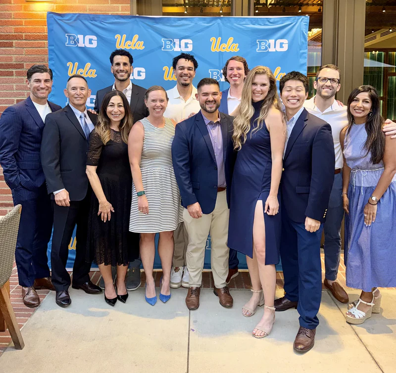

Clinical trial design
Randomized, blinded, placebo-controlled trials and prospective crossover studies address questions about sleep, recovery interventions, and athletic performance.
Explore the completed MgT trialHERO Lab · UCLA + UCSF
We welcome conversations with academic investigators and industry research teams studying athlete sleep, recovery, and performance.

Research capabilities
HERO Lab brings together sports medicine investigators from UCLA and UCSF. Our work combines clinical trial design, wearable monitoring, and objective performance testing, with methods selected for each study.
Randomized, blinded, placebo-controlled trials and prospective crossover studies address questions about sleep, recovery interventions, and athletic performance.
Explore the completed MgT trialWHOOP monitoring adds repeated measures of sleep and recovery during athletes' daily lives. The outcome definitions and monitoring periods depend on the research question.
Explore the cold water immersion studyOur planned magnesium formulation study pairs wearable monitoring with reaction-time assessment and VALD grip-strength and countermovement-jump testing.
See the planned measurementsPotential collaborators
These are invitations to discuss possible research. The question, scientific fit, study design, and feasibility would shape any collaboration.
Bring a clinical question, an athlete population, or complementary methods. We welcome discussion across sports medicine, sleep science, rehabilitation, and performance research.
Bring a question about a wearable, recovery intervention, or performance technology. Potential studies can explore how a technology or intervention relates to defined sleep, recovery, or performance outcomes.
Our work in practice
Our research spans sleep, recovery, concussion rehabilitation, and athlete travel. The linked pages describe each project's methods, findings or planned outcomes, and limitations.
Planned randomized trial
The separate formulation trial compares magnesium glycinate, magnesium L-threonate, and placebo in UCLA varsity athletes. Planned measures include WHOOP-derived sleep efficiency and structured performance testing.
Explore the study designCompleted crossover study
A prospective four-week crossover study in 37 NCAA Division I athletes evaluated post-training cold water immersion with continuous WHOOP monitoring and jump-performance assessment.
Explore the study and its limitationsPreliminary observational pilot
An uncontrolled pilot followed supervised resistance exercise during post-concussion rehabilitation in 11 NCAA Division I athletes. It provides questions for future controlled research.
Explore the pilot studyPeer-reviewed narrative review
HERO Lab and WHOOP investigators coauthored a review of athlete travel, sleep, and circadian challenges. The review synthesizes existing evidence and expert guidance; it generated no new data.
Explore the review and evidenceQuestions to bring
You can bring an early idea or a developed proposal. Topics for discussion might include:
Start the conversation
Email Jeremy Swisher, MD, with a brief overview. A short description of the idea and the people or technology involved gives us a starting point for discussing research fit.
Email a collaboration inquiry